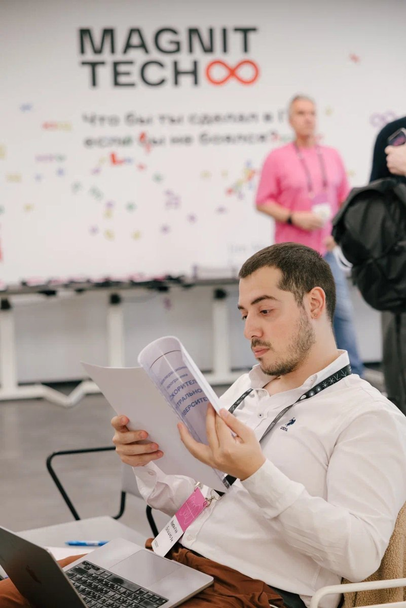
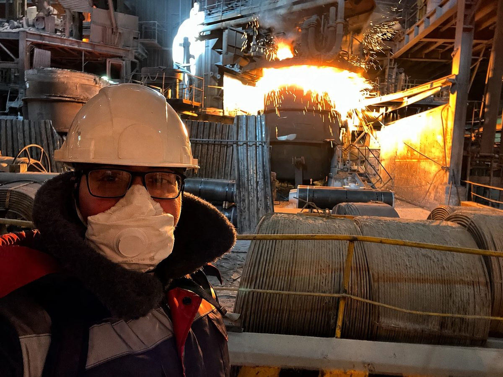
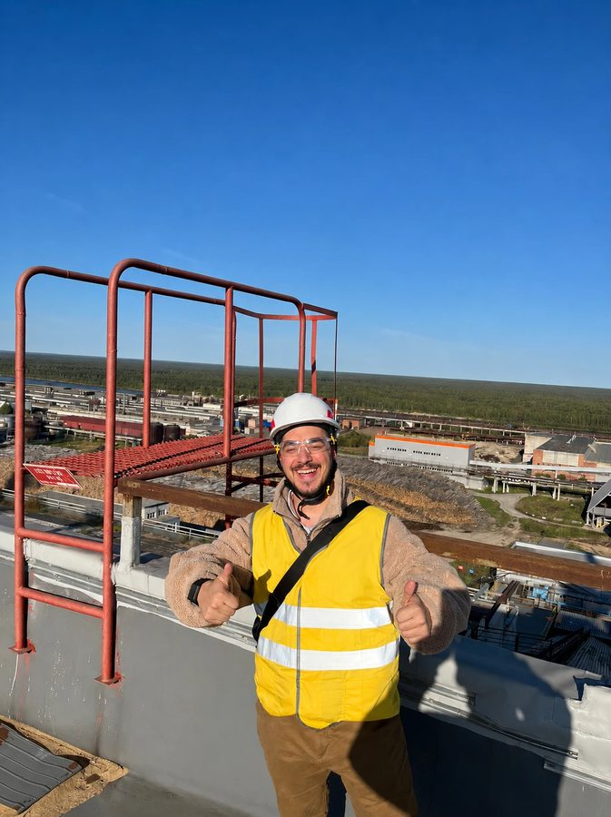

Помогаю принимать решения, от которых зависит стоимость бизнеса
Работаю с собственниками и руководителями: проверяю сделки, разрабатываю стратегию, нахожу резервы выручки и маржи. Проект веду лично. Экспертов и команду подключаю под задачу
Опыт работы
Решаю задачи роста и эффективности бизнеса
Выберите одно или несколько направлений и отраслей
Измените сочетание направлений и отраслей, чтобы увидеть подходящие кейсы
RocketTechИТ-стратегия и управление портфелемПодготовил ИТ-стратегию и систему оценки инициатив, представил рабочий комплект командеОткрыть проект
СтадияРабочая стратегия и процесс представлены, портфель проходит оценку- Ситуация
- Бизнесу требовалась связь ИТ с экономикой, рисками и приоритетами развития
- Задача
- Связать ИТ-стратегию, оценку инициатив и развитие команды с бизнес-приоритетами
- Мои действия
- Систематизировал диагностику, показатели, архитектуру. Разработал оценку, паспорта инициатив и замеры времени, связал изменения с владельцами эффекта
- Результат
- Подготовил стратегию и систему оценки, представил комплект команде. Руководство согласует приоритеты и запуск программ
- Команда и взаимодействие
- Моя роль
Руковожу портфелем проектов одного клиента: около пяти проектов общей стоимостью около $500 тыс. Отвечаю за P&L реализации, команду и допродажи. Лично разрабатываю решения и проектные материалы, веду реализацию с командой. В ИТ-стратегии связываю инициативы с экономикой, владельцами результата и стадиями решений
- Реализация портфеля13 разработчиков и консультанты
Выполняют проекты клиента под моим управлением
- ЗаказчикКураторы инициатив
Предоставляют сведения для реестра и проработки инициатив
- ЗаказчикИТ-команда заказчика
Обсуждает программу развития работы команды
- Реализация портфеля13 разработчиков и консультанты
- Материалы для заказчика
- Рабочая ИТ-стратегия 2027–2029Состав
- Диагностика, целевые показатели
- Архитектура, инициативы
- Владельцы эффекта, условия запуска
Применение: Согласовать ИТ-приоритеты бизнеса с руководством
- Реестр, паспорта инициатив и калькулятор эффектовСостав
- Статусы, паспорта
- Расчёты эффектов
Применение: Подготовить инициативы к оценке руководством
- Правила оценки и журнал решенийСостав
- Защита, переходы стадий
- Решения, действия ответственных
Применение: Подготовить оценку инициатив и исполнение решений
- Варианты диагностики рабочего времениСостав
- Два варианта замера
- Форма самоисследования
Применение: Обсудить загрузку, ответственность владельцев продукта и развитие
- Работы в портфеле
- ИТ-стратегия 2027–2029
- Приоритеты цифровизации и архитектура
- Паспорта и оценка ИТ-инициатив
- Портфель проектов 2027 года
- Диагностика и развитие ИТ-команды
RocketTechПлатформа данных и управленческая аналитикаПервые компоненты данных приняты, кадровая служба получила отчётность и рабочие инструментыОткрыть проект
СтадияЧастичная приёмка компонентов и проверка рабочих версий- Ситуация
- Финансы, кадры и ветслужба согласовывали источники и расчёты
- Задача
- Согласовать данные, отчётность, инфраструктуру и поэтапную приёмку
- Мои действия
- Согласовал источники, витрины, качество и инфраструктуру. Координирую заказчиков, технических владельцев, сверку и приёмку
- Результат
- Первые компоненты приняты, кадры получили отчётность и инструменты. Команда продолжает сверку закупок, продаж и проверку инфраструктуры
- Команда и взаимодействие
- Моя роль
Координирую заказчиков и исполнителей, согласовываю требования и приёмку
- ИсполнениеИнженеры данных и инфраструктурная команда
Реализуют компоненты данных и инфраструктуры
- ИсполнениеПрофильные аналитики
Ведут расчёты, загрузки и техническое содержание отчётности
- ЗаказчикБизнес-заказчики закупок, продаж и кадров
Уточняют требования, сверяют показатели, комментируют рабочие версии
- ИсполнениеИнженеры данных и инфраструктурная команда
- Материалы для заказчика
- Технические задания по данным и инфраструктуреСостав
- Источники, загрузки, витрины, качество
- Доступ, восстановление
- Выпуск версий, мониторинг
Применение: Согласовать требования к данным и инфраструктуре
- Панели закупок, продаж и кадровой отчётностиСостав
- Закупки, продажи, кадры
- Рабочие версии
Применение: Сверить показатели с заказчиками и владельцами данных
- Матрицы сверки и приёмки данныхСостав
- Расхождения источников
- Контрольные сценарии, замечания заказчиков
Применение: Подготовить проверку и приёмку компонентов отчётности
- Две рабочие книги миграционного учётаСостав
- Инструменты миграционного учёта
- Проверенные формулы, доработки
Применение: Поддержать ведение текущего миграционного учёта
- Работы в портфеле
- Общий слой данных, инфраструктура и восстановление
- Закупки: расхождения с 1С снижены с 4,9% до 0,0% в проверенном срезе
- Продажи: требования и сверка с коммерческим заказчиком
- Кадры: пять вкладок отчётности и первый принятый набор данных
- Миграционный учёт: две рабочие книги с контролем сроков
RocketTechЭкономика и эффективность производстваФинансовая служба приняла первую форму маржинальности, производство получило панель ежедневных решенийОткрыть проект
СтадияОт принятой отчётности и прототипов до предложений пилотов- Ситуация
- Финансам, коммерции и производству требовалась общая база решений о затратах, выпуске и продажах
- Задача
- Согласовать методику затрат, продуктовый состав и производственные инструменты
- Мои действия
- Согласовал требования финансов и границы решений. Координирую методолога, производство, разработчиков, проверку расчётов, приёмку отчётности и инициативы
- Результат
- Финансы приняли первую форму маржинальности, производство получило ежедневную панель. Заказчик подтвердил подход к планированию, команда проверяет прототип и расчёты
- Команда и взаимодействие
- Моя роль
Руковожу проектами, связываю производство, финансы, методологов и разработчиков
- ЭкспертизаМетодолог и экономисты
Ведут методологию и финансовую проработку расчётов
- ИсполнениеАналитики и разработчики
Реализуют расчёты, прототипы и производственную панель
- ЗаказчикПроизводство, финансы и коммерция
Согласуют сценарии, контрольные примеры и приёмку бизнес-результата
- ЭкспертизаМетодолог и экономисты
- Материалы для заказчика
- Методика затрат и калькулятор продуктового составаСостав
- Распределение затрат по переделам
- Контрольный расчёт, продуктовый состав
Применение: Согласовать финансовые показатели с заказчиком
- Форма маржинальности и производственная панельСостав
- Маржинальность
- Производство, остатки, цены
Применение: Поддержать приёмку инструментов ежедневных решений
- Прототип планировщика и диагностика потерьСостав
- Планирование, продуктовый состав
- Виды потерь, производственные точки
- Рычаги улучшений
Применение: Проверить производственные гипотезы и потенциал улучшений
- Предложения по численности и компьютерному зрениюСостав
- Границы, этапы, критерии пилотов
- Замер времени, точки счёта
- Экономика
Применение: Обсудить пилоты и проверить их экономику
- Работы в портфеле
- Себестоимость и маржа: первая форма принята, методика согласуется
- Планирование выпуска и продаж: рабочий прототип
- Производственные потери: диагностика и программа инициатив
- Ежедневная панель производства: четыре страницы переданы заказчику
- Сырьё и полуфабрикаты: обследование и согласование объёма
- Производительность и численность: предложение диагностики
- Компьютерное зрение: паспорт пилота
RocketTechЦифровизация ветеринарной службыЭлектронные формы получили 169 записей за первые пять дней работыОткрыть проект
СтадияФормы применяются, аналитика проходит проектирование- Ситуация
- Ветслужбе требовались электронные данные осмотров, вскрытий и приёмки птичников
- Задача
- Объединить осмотр, вскрытие и приёмку птичника в электронный сбор данных
- Мои действия
- Собрал требования, координировал аналитиков и ИТ. Довёл с командой три формы до применения, организовал приёмку, обучение и анализ качества
- Результат
- Пользователи внесли 169 записей за первые пять дней. Требования к ветаналитике и учёту препаратов проходят согласование
- Подтверждённые показатели проекта
Первое применение 169Записей за первые пять дней- Команда и взаимодействие
- Моя роль
Собрал требования, координировал аналитиков и ИТ, провёл приёмку и обучение
- ИсполнениеКоманда разработки форм
Реализует веб-формы и последующие доработки
- ЭкспертизаПрофильный аналитик
Ведёт аналитическую разработку ветеринарного направления
- ЗаказчикВетслужба, бухгалтерия и ИТ
Согласуют процессы, источники, требования. Ветслужба принимает предметные решения
- ИсполнениеКоманда разработки форм
- Заказчик получил
- Три веб-формы и инструкции пользователейСостав
- Единый ввод ветданных
- Инструкции, обратная связь
Применение: Поддержать обучение пользователей и приёмку форм
- Отчёт по первым пяти дням примененияСостав
- Заполнение за пять дней
- Качество данных
Применение: Определить дальнейшие доработки ветеринарных форм
- Техническое задание ветеринарной аналитикиСостав
- Карта процессов
- Источники учётных данных
Применение: Согласовать требования ветслужбы, бухгалтерии, аналитика и ИТ
- Работы в портфеле
- Электронные формы осмотра
- Электронные формы вскрытия
- Приёмка птичника
- Ветеринарная аналитика
- Учёт препаратов и движение партий
RocketTechИИ и автоматизация внутренних процессовОсновной релиз ИИ-генератора карточек 1С запущен в рабочей среде, приёмка качества продолжаетсяОткрыть проект
СтадияГенератор в рабочей среде, остальные сценарии на стадии обследования- Ситуация
- Закупочная номенклатура требовала ручного сбора сведений и проверки карточек
- Задача
- Довести генератор черновиков 1С до предметной приёмки, определить следующую автоматизацию
- Мои действия
- Испытал генератор, выдал шесть заданий с критериями проверки. Координирую приёмку, определил с заказчиками приоритеты следующих сценариев
- Результат
- Команда запустила основной релиз генератора в рабочей среде, приёмка качества продолжается. Юридические сценарии и сверки 1С проходят обследование
- Команда и взаимодействие
- Моя роль
Управляю генератором, предметным качеством и проработкой сценариев с заказчиками
- ИсполнениеРазработчики генератора
Получают задания и дорабатывают генератор
- ЗаказчикРуководитель 1С и функциональные заказчики
Прорабатывают сверки, контроль, приёмку и проверку применимости
- ЗаказчикЮридическая функция
Участвует в обследовании и приоритизации предметных сценариев
- ИсполнениеРазработчики генератора
- Материалы для заказчика
- Генератор черновиков карточек 1ССостав
- Черновики 1С
- Предметные испытания
Применение: Проверить предметное качество перед приёмкой заказчиком
- Техническое задание и журнал испытанийСостав
- Требования генератора
- Результаты парных испытаний, наблюдения
Применение: Подготовить последующую предметную проверку генератора
- Шесть заданий разработчикам с критериями проверкиСостав
- Ошибки, исходники
- Воспроизведение
- Критерии повторной проверки
Применение: Исправить ошибки и повторно проверить результат
- Приоритеты юридических сценариев и сверок 1ССостав
- Юридические сценарии, сверки данных
- Контроль
- План предметных проверок
Применение: Определить приоритеты дальнейшей автоматизации с заказчиками
- Работы в портфеле
- ИИ-генератор черновиков карточек 1С
- Предметная проверка качества карточек
- Автоматизация межсистемных сверок
- Три ИИ-сценария юридической функции
- Требования к интеграции с «КонсультантПлюс»
RocketTechОнлайн-продажи и ценовые решенияПередал заказчику диагностику онлайн-магазина и дорожную карту развитияОткрыть проект
СтадияДиагностика завершена, дальнейшие этапы обсуждаются- Ситуация
- Онлайн-каналу требовались общие продуктовые, коммерческие и технологические приоритеты роста
- Задача
- Подготовить диагностику магазина, дорожную карту и концепцию мониторинга рыночных цен
- Мои действия
- Координировал диагностику и показатели, обсуждал целевую модель с руководством. Структурировал источники, ценовые сигналы и концепцию экранов
- Результат
- Передал заказчику диагностику онлайн-магазина и дорожную карту. Представил коммерческому руководителю концепцию мониторинга рыночных цен
- Команда и взаимодействие
- Моя роль
Согласовывал продукт, технологии и коммерцию с руководством и командами
- ИсполнениеКоманда диагностики онлайн-магазина
Проводит предметную диагностику онлайн-магазина
- РешениеРуководство заказчика
Обсуждает целевую модель и приоритеты развития
- ИсполнениеКоманда диагностики онлайн-магазина
- Заказчик получил
- Диагностика продукта, технологий и процессаСостав
- Продукт, сквозной процесс
- Архитектура, точки отказа
Применение: Обсудить целевую модель онлайн-магазина с руководством
- Реестр проблем, система показателей и дорожная картаСостав
- Проблемы, мероприятия
- Показатели, последовательность реализации
Применение: Обсудить приоритеты и последовательность развития магазина
- Концепция мониторинга цен и план запускаСостав
- Семь ценовых сигналов
- Экраны обзора, позиций
- Коммерческое предложение, план реализации
Применение: Обсудить условия запуска системы мониторинга цен
- Работы в портфеле
- Диагностика онлайн-магазина
- Продукт и команда
- Технологические ограничения
- Дорожная карта развития
- Концепция мониторинга рыночных цен
Самостоятельная практикаОбосновал покупку молочного производстваИнвестиционный и кредитный комитеты одобрили обоснование покупки бизнеса стоимостью около $16 млнОткрыть проект
СтадияОбоснование одобрено инвестиционным и кредитным комитетами- Ситуация
- Покупатель оценивал молочное производство стоимостью около $16 млн и заёмное финансирование
- Задача
- Проверить экономику завода, цену покупки и рабочую структуру сделки
- Мои действия
- Провёл коммерческую проверку и финансовое моделирование с бывшим руководителем проектов BCG. Построил модели покупки, кредитования и операций, оценил синергии
- Результат
- Инвестиционный и кредитный комитеты одобрили финансовое и коммерческое обоснование покупки бизнеса стоимостью около $16 млн
- Команда и взаимодействие
- Моя роль
Вёл финансовую и коммерческую проработку покупки
- ЭкспертизаБывший руководитель проектов BCG
Совместно вёл финансовую и коммерческую проработку покупки
- ЭкспертизаБывший руководитель проектов BCG
- Заказчик получил
- Коммерческое обоснование покупкиСостав
- Коммерческая проверка
- Инвестиционный тезис
Применение: Поддержать оценку покупки инвестиционным и кредитным комитетами
- Модели покупки, кредитования и операцийСостав
- Покупка с заёмным финансированием
- Кредитная, операционная модели
- Денежные потоки
Применение: Проработать финансирование и структуру сделки покупателя
- Оценка синергий консолидацииСостав
- Денежные потоки синергий
- Приведённая стоимость синергий
Применение: Учесть расчётный эффект консолидации в экономике покупки
Самостоятельная практикаЗакрыл продажу бренда одеждыБизнес стоимостью около $2 млн продан стратегическому инвестору. Условия и договоры согласованыОткрыть проект
СтадияСделка закрыта- Ситуация
- Владелец бренда одежды готовил продажу стратегическому инвестору
- Задача
- Подготовить бренд к продаже, привлечь стратегического инвестора и организовать сделку
- Мои действия
- Вёл процесс продавца: подготовил оценку и инвестматериалы, привлёк стратегического инвестора, согласовал условия, координировал договоры
- Результат
- Бизнес стоимостью около $2 млн продан стратегическому инвестору. Условия и договоры согласованы
- Команда и взаимодействие
- Моя роль
Вёл весь процесс продавца
Профессиональное взаимодействие
- Стратегический инвестор и сторона продавцаПривлёк инвестора, согласовывал условия и документы с обеими сторонами
- Заказчик получил
- Инвестиционные материалы и оценкаСостав
- Представление бизнеса
- Оценка для стратегического инвестора
Применение: Поддержать переговоры продавца об условиях продажи
- Согласованный комплект договоров сделкиСостав
- Соглашение о конфиденциальности
- Основные условия
- Корпоративный договор
- Договор купли-продажи
Применение: Согласовать условия и документы сторон сделки
Самостоятельная практикаОценил косметический бренд для покупателяПодготовил сценарную оценку контрольного пакета (50%+1) и переговорную позицию покупателя. Стоимость бизнеса – около $25 млнОткрыть проект
СтадияСценарная оценка подготовлена для покупателя- Ситуация
- Покупатель оценивал контроль косметического бренда и прогноз продавца
- Задача
- Определить стоимость контрольного пакета, проверить прогноз продавца
- Мои действия
- Нормализовал прибыль, построил сценарии, оценил бизнес доходным и сравнительным методами. Рассчитал покупку контроля с частью цены, зависящей от будущих результатов
- Результат
- Сценарная оценка контроля 50%+1 и переговорная позиция подготовлены покупателю
- Команда и взаимодействие
- Моя роль
Вёл коммерческую проверку, модель и оценку для покупателя
- Материалы для заказчика
- Сценарная модель и нормализованная прибыльСостав
- Нормализация разовых факторов прибыли
- Сравнение сценариев
Применение: Оценить бизнес и сценарии сделки покупателя
- Оценка денежных потоков и мультипликаторовСостав
- Доходная оценка
- Рыночные мультипликаторы
Применение: Обосновать позицию покупателя по цене сделки
- Структура покупки 50% + 1Состав
- Контрольный пакет
- Часть цены по будущим результатам
Применение: Обсудить структуру и условия покупки
Ранние проектыОценил стоимость строительства гостиницы в Сочи для инвесторовИнвесторы получили расчёт стоимости строительства гостиницы в Сочи и материалы для переговоровОткрыть проект
СтадияРасчёт подготовлен для инвесторов- Ситуация
- Частные инвесторы готовились к переговорам по гостиничному проекту в Сочи
- Задача
- Оценить стоимость строительства и подготовить финансовые материалы для переговоров
- Мои действия
- Оценил стоимость строительства гостиницы в Сочи для инвесторов и подготовил финансовые материалы для переговоров
- Результат
- Инвесторы получили расчёт стоимости строительства гостиницы в Сочи и переговорные материалы
- Команда и взаимодействие
- Моя роль
Рассчитал стоимость строительства и подготовил финансовые материалы
- Заказчик получил
- Расчёт стоимости строительства гостиницыСостав
- Расчёт стоимости строительства
- Затраты строительства
Применение: Обосновать затраты на строительство для инвесторов
- Финансовые материалы для переговоровСостав
- Расчёт стоимости
- Финансовое обоснование стоимости
Применение: Поддержать обсуждение затрат на строительство гостиницы
ГЛОНАССЗащитил пятилетнюю стратегию ГЛОНАСССтратегия защищена перед советом директоров и министром. Цель – утроить EBITDA за пять летОткрыть проект
СтадияСтратегия защищена, финансовый эффект обозначает цель- Ситуация
- ГЛОНАСС формировал пятилетний план развития и новых бизнес-направлений
- Задача
- Определить приоритеты, связать корпоративную и функциональные стратегии с пятилетним планом
- Мои действия
- Разработал финансовую модель, провёл четыре сессии, собрал корпоративную и функциональные стратегии
- Результат
- Защитил пятилетнюю стратегию перед советом директоров и министром транспорта. Цель: утроение EBITDA за пять лет
- Команда и взаимодействие
- Моя роль
Руководил офисом трансформации, отвечал за стратегию, подчинялся гендиректору
Профессиональное взаимодействие
- Генеральный директор ГЛОНАССПодчинялся гендиректору, отвечал за корпоративную стратегию
- Заказчик получил
- Пятилетняя корпоративная и функциональные стратегииСостав
- Пятилетний корпоративный горизонт
- Функциональные направления
Применение: Согласовать направления развития и корпоративные инициативы
- Финансовая модельСостав
- Пятилетние расчёты
- Финансовые ориентиры
Применение: Обсудить финансовую основу корпоративных решений
- Материалы четырёх стратегических сессийСостав
- Четыре проведённые сессии
- Корпоративные, функциональные решения
Применение: Объединить корпоративные и функциональные решения в стратегию
Самостоятельная практикаРазработал стратегию роста ИТ-компанииСтратегия утверждена акционерами. Прототип: 10 тыс. звонков и 7 причин отказаОткрыть проект
СтадияСтратегия утверждена, речевая аналитика в прототипе- Ситуация
- Разработчик облачных сервисов оценивал рост, применение ИИ и причины отказов
- Задача
- Определить модель роста и коммерческие действия с учётом ИИ и отказов
- Мои действия
- Сравнил бизнес-модели и применение ИИ, сегментировал рынок, с командой подготовил стратегии и инициативы. Создал прототип анализа звонков и рекомендации по отказам
- Результат
- Акционеры утвердили стратегию: цель выручки $120 млн к 2030 при базе $24 млн. Прототип охватывает 10 тыс. звонков, семь причин отказа
- Подтверждённые показатели проекта
Выручка: база и цель стратегии, $ млн Шкала начинается с нуля. $120 млн – цель стратегии- Команда и взаимодействие
- Моя роль
Анализ моделей и рынка, стратегия с командой, прототип речевой аналитики
- ЭкспертизаБывшие партнёры McKinsey
Совместно разрабатывали стратегию компании
- ЭкспертизаБывшие партнёры McKinsey
- Заказчик получил
- Корпоративная, коммерческая и функциональные стратегииСостав
- Сравнение бизнес-моделей
- Сегментация рынка
- Подходы к внедрению ИИ
Применение: Согласовать направления роста компании с акционерами
- Сценарии и план инициативСостав
- Стратегические сценарии
- Инициативы, ориентиры роста
Применение: Поддержать обсуждение и утверждение плана акционерами
- Прототип анализа звонковСостав
- Расшифровки разговоров
- Десять тысяч звонков
Применение: Выявить причины отказа клиентов по звонкам
- Семь причин отказа и рекомендации продажамСостав
- Семь причин отказа
- Рекомендации по звонкам
Применение: Подготовить рекомендации продажам по причинам отказа
McKinsey & CompanyСравнил подходы к развитию видеосервисовСравнение международных видеосервисов и предложения по развитию продукта подготовлены для проектной командыОткрыть проект
СтадияСравнительное исследование подготовлено- Ситуация
- Команда McKinsey изучала варианты развития видеосервиса
- Задача
- Изучить международные практики развития видеосервисов
- Мои действия
- Сравнил международные практики видеосервисов, подготовил предложения по развитию продукта
- Результат
- Сравнение видеосервисов и продуктовые предложения подготовлены для проектной команды
- Команда и взаимодействие
- Моя роль
Бизнес-аналитик-стажёр проектной команды McKinsey & Company
- ИсполнениеПроектная команда McKinsey & Company
Вела проектную работу по развитию видеосервиса
- ИсполнениеПроектная команда McKinsey & Company
- Материалы для заказчика
- Сравнение международных практик видеосервисовСостав
- Международные практики
- Развитие видеосервисов
Применение: Подготовить предложения по дальнейшему развитию продукта
- Предложения по развитию продуктаСостав
- Выводы международного сравнения
- Продуктовые предложения
Применение: Дополнить проектные материалы по развитию продукта
Яков и ПартнёрыС командой разработал модель дистрибуцииКоманда разработала модель дистрибуции с расчётным потенциалом роста маржи до 10 п. п.Открыть проект
СтадияМодель разработана, эффект обозначает потенциал- Ситуация
- Дистрибуция сельхозпродукции зависела от российского спроса и экономики международных поставок
- Задача
- Изучить спрос, выбрать канал поставок и дистрибуции с лучшей экономикой
- Мои действия
- Исследовал спрос на сельхозпродукцию по России, поставки из Китая и Польши, сравнил операционные модели
- Результат
- Команда разработала модель дистрибуции с расчётным потенциалом роста маржи до 10 п. п.
- Команда и взаимодействие
- Моя роль
Спроектировал исследование, анализировал данные
- ИсполнениеПроектная команда «Яков и Партнёры»
Разработала модель дистрибуции по итогам исследования
- ИсполнениеПроектная команда «Яков и Партнёры»
- Материалы для заказчика
- Дизайн всероссийского исследования спросаСостав
- Дизайн всероссийского исследования
- Спрос на сельхозпродукцию
Применение: Исследовать спрос для выбора канала дистрибуции
- Анализ поставок из Китая и ПольшиСостав
- Цепочки поставок из Китая
- Цепочки поставок из Польши
Применение: Сравнить операционные варианты каналов дистрибуции
- Модель канала дистрибуцииСостав
- Спрос, поставки
- Операционные варианты
Применение: Оценить расчётный потенциал роста маржи канала
McKinsey & CompanyУчаствовал в разработке стратегии эмиратаКоманда подготовила аналитические материалы для стратегии устойчивого развития эмирата ОАЭОткрыть проект
СтадияАналитические материалы стратегии подготовлены командой- Ситуация
- Эмират ОАЭ формировал приоритеты устойчивого развития и инвестиционных решений
- Задача
- Определить приоритеты устойчивого развития и основу инвестиционных решений
- Мои действия
- Как бизнес-аналитик-стажёр McKinsey участвовал в подготовке аналитических материалов команды
- Результат
- Команда подготовила аналитические материалы стратегии устойчивого развития эмирата ОАЭ
- Команда и взаимодействие
- Моя роль
Бизнес-аналитик-стажёр команды McKinsey & Company
- ИсполнениеПроектная команда McKinsey & Company
Подготовила материалы стратегии устойчивого развития эмирата
- ИсполнениеПроектная команда McKinsey & Company
- Материалы для заказчика
- Аналитические материалы по устойчивому развитиюСостав
- Устойчивое развитие эмирата
- Аналитические материалы стратегии
Применение: Подготовить аналитическую основу стратегии устойчивого развития
McKinsey & CompanyРазработал концепцию транспорта с гибкими маршрутамиАнализ связанности Подмосковья и концепция пилота вошли в материалы транспортной стратегииОткрыть проект
СтадияАналитика и концепция пилота подготовлены- Ситуация
- Транспорт Подмосковья требовал оценки связанности и вариантов перевозок
- Задача
- Подготовить аналитику для решений о развитии транспортной системы
- Мои действия
- Участвовал в анализе связанности Подмосковья, подготовил концепцию пилота динамической маршрутки
- Результат
- Анализ связанности Подмосковья и концепция пилота вошли в материалы транспортной стратегии
- Команда и взаимодействие
- Моя роль
Бизнес-аналитик-стажёр McKinsey, вёл отдельные задачи транспортной стратегии
- ИсполнениеПроектная команда McKinsey & Company
Собирала материалы региональной транспортной стратегии
- ИсполнениеПроектная команда McKinsey & Company
- Материалы для заказчика
- Аналитика транспортной связанностиСостав
- Связанность Подмосковья
- Проектная аналитика
Применение: Проработать региональную транспортную стратегию по связанности
- Концепция пилота перевозок по запросуСостав
- Динамическая маршрутка
- Пилот перевозок
Применение: Обсудить пилот перевозок в транспортной стратегии
Ранние проектыРассчитал экономику запуска таксопаркаФинансовая модель, мотивация водителей и требования к приложению подготовлены для запуска таксопаркаОткрыть проект
СтадияЭкономика и решения для запуска подготовлены- Ситуация
- Запуск такси требовал проверки экономики и операционных решений
- Задача
- Проверить экономику, определить операционную модель запуска
- Мои действия
- Рассчитал экономику поездки и таксопарка, разработал мотивацию водителей и требования к приложению
- Результат
- Финансовая модель, мотивация водителей и требования к приложению подготовлены для запуска таксопарка
- Команда и взаимодействие
- Моя роль
Вёл экономику и операционную модель с предпринимателем
- ЗаказчикПредприниматель
Совместно прорабатывал экономику и операционную модель запуска
- ЗаказчикПредприниматель
- Материалы для заказчика
- Финансовая модель поездки и таксопаркаСостав
- Экономика поездки
- Экономика таксопарка
Применение: Проработать финансовую основу запуска с предпринимателем
- Система мотивации водителейСостав
- Мотивация водителей
- Экономика таксопарка
Применение: Подготовить решения по запуску таксопарка
- Требования к приложениюСостав
- Ожидаемая функциональность
- Экономика, операционная модель
Применение: Проработать требования к цифровой части запуска
Яндекс РекламаУвеличил продажи медийной рекламы в ЯндексеПродажи медийной рекламы подразделения выросли на $2,8 млн в год через аналитику и регулярное управлениеОткрыть проект
СтадияДостигнутый результат подразделения- Ситуация
- Команда Яндекс Рекламы развивала продажи медийной рекламы
- Задача
- Увеличить продажи, включить выявленные возможности в регулярную работу команды
- Мои действия
- Разработал план-факт аналитику медийной рекламы, выявлял отклонения, с руководителями переводил выводы в регулярные решения по продажам
- Результат
- Продажи медийной рекламы подразделения выросли на $2,8 млн в год через аналитику и регулярное управление
- Команда и взаимодействие
- Моя роль
Менеджер проектов внутреннего консалтинга, отвечал за аналитику и оценку
- ЗаказчикКоммерческое подразделение Яндекс Рекламы
Получило аналитику и регулярную оценку результатов медийной рекламы
- ЗаказчикКоммерческое подразделение Яндекс Рекламы
- Заказчик получил
- План-факт анализ медийной рекламыСостав
- План, фактические продажи
- Отклонения
Применение: Поддержать регулярную оценку коммерческих результатов подразделения
- Регулярные разборы результатов с руководителямиСостав
- План-факт
- Эффективность медийной рекламы
Применение: Проанализировать результаты медийной рекламы подразделения
Яков и ПартнёрыВнедрил управление производственными показателямиУправленческий контур внедрён. Командный результат – +100 тыс. т (+10%) к годовому темпу выпускаОткрыть проект
СтадияВнедрение завершено, результат командный- Ситуация
- Сталелитейному активу требовались стабилизация производства и рост выпуска в бюджете
- Задача
- Стабилизировать производство, увеличить выпуск в пределах бюджета
- Мои действия
- Построил дерево факторов, запустил ежедневную отчётность акционерам и проектный офис. Собрал инициативы, провёл три сессии с руководителями производства
- Результат
- Команда увеличила годовой темп выпуска на 100 тыс. т, или 10%
- Подтверждённые показатели проекта
Командный результат +100 тыс. тК годовому темпу выпуска+10%Изменение годового темпа выпуска- Команда и взаимодействие
- Моя роль
Вёл аналитику, проектный офис, технико-экономические показатели и отчётность акционерам
- ИсполнениеКоманда «Яков и Партнёры»
Совместно реализовала производственную трансформацию на площадке
- ИсполнениеКоманда «Яков и Партнёры»
- Заказчик получил
- Дерево производственных факторов и показателиСостав
- Производственные факторы
- Технико-экономические показатели
Применение: Поддержать ежедневное обсуждение инициатив роста выпуска
- Ежедневная отчётность акционерамСостав
- Ежедневные производственные показатели
- Стабилизация, рост выпуска
Применение: Поддержать контроль производства акционерами на площадке
- Проектный офис и портфель инициативСостав
- Инициативы
- Производственная отчётность
Применение: Организовать изменения и контроль производственных показателей
- Материалы трёх рабочих сессийСостав
- Три проведённые сессии генерации идей
- Факторы, идеи, инициативы
Применение: Связать идеи с портфелем производственных инициатив
Ранние проектыПровёл обучение аналитиков телеком-оператораОбучение проведено для 300+ аналитиков одного из телеком-операторов большой четвёркиОткрыть проект
СтадияПроведённое обучение- Ситуация
- Аналитикам телеком-оператора большой четвёрки требовались общий подход и проектные инструменты
- Задача
- Обучить аналитиков общему подходу и инструментам проектных задач
- Мои действия
- Провёл обучение аналитиков телеком-оператора большой четвёрки
- Результат
- Обучение проведено для 300+ аналитиков телеком-оператора большой четвёрки
- Команда и взаимодействие
- Моя роль
Обучал аналитиков телеком-оператора
Профессиональное взаимодействие
- Аналитики телеком-оператора большой четвёркиОбучил более чем трёхсот аналитиков
- Заказчик получил
- Обучение 300+ аналитиковСостав
- Общий подход
- Рабочие инструменты
Применение: Поддержать выполнение проектных задач аналитиками компании
ГЛОНАСССвязал премирование с целями и вкладом сотрудниковКвартальная система внедрена для 500 сотрудников. Расчётная экономия ФОТ – около $1 млн в годОткрыть проект
СтадияСистема внедрена, экономия расчётная- Ситуация
- ГЛОНАСС связывал квартальные премии с целями компании и вкладом сотрудников
- Задача
- Связать премирование с целями компании и фактическим вкладом сотрудников
- Мои действия
- С директором по персоналу внедрил квартальные показатели, правила расчёта премии и общий цикл оценки результатов
- Результат
- Система охватила 500 сотрудников. Расчётная годовая экономия фонда оплаты труда составила около $1 млн
- Подтверждённые показатели проекта
Система премирования 500Сотрудников в системе~$1 млнРасчётная экономия оплаты труда в год- Команда и взаимодействие
- Моя роль
Руководил офисом трансформации, вёл проект с директором по персоналу
- ЗаказчикДиректор по персоналу
Совместно внедрил квартальные показатели и систему премирования
- ЗаказчикДиректор по персоналу
- Заказчик получил
- Квартальная система показателейСостав
- Квартальные показатели
- Цели компании, вклад сотрудников
Применение: Связать оценку результатов с квартальным премированием
- Правила расчёта премии и цикл оценкиСостав
- Расчёт премии
- Общий цикл оценки
Применение: Поддержать применение системы для 500 сотрудников
Самостоятельная практикаОбосновал целевую численность 7 функций девелопераРазработаны модели численности 7 функций. Расчётный потенциал оптимизации штата – 10–30%Открыть проект
СтадияЦелевая модель численности разработана- Ситуация
- Девелоперский холдинг обосновывал целевую численность семи функций
- Задача
- Определить целевую численность и участки с разной производительностью
- Мои действия
- Руководил командой до трёх человек. Анализировал загрузку, замерял рабочее время, сравнивал производительность и строил драйверные модели численности
- Результат
- Разработал модели 7 функций. Расчётный потенциал оптимизации штата: 10–30%
- Подтверждённые показатели проекта
Расчётный потенциал оптимизации штата 10–30%Модели охватывают семь функций- Команда и взаимодействие
- Моя роль
Руководил проектом, разработал модели численности
- ИсполнениеПроектная команда до трёх человек
Разрабатывала модели численности под моим руководством
- ИсполнениеПроектная команда до трёх человек
- Материалы для заказчика
- Драйверные модели численности семи функцийСостав
- Загрузка и производительность
- Продажи и заселение
- Производство, бухгалтерия, благоустройство
- Целевая численность
Применение: Обосновать целевую численность семи функций
- Калькуляторы, анализ загрузки и рекомендацииСостав
- Замеры рабочего времени
- Выпуск на сотрудника
- Расчёты и рекомендации
Применение: Обосновать численность по загрузке
McKinsey & CompanyРазработал модель управления эффективностью банкаЦели 22 направлений связаны с план-факт отчётностью. Руководство получило единую модель контроляОткрыть проект
СтадияУправленческая модель и отчётность разработаны- Ситуация
- Банк Узбекистана выстраивал единый контроль целей 22 направлений
- Задача
- Связать цели, показатели и управленческий цикл банка
- Мои действия
- В команде McKinsey связал показатели 22 направлений с целями банка, разработал расчётные модели план-факт контроля
- Результат
- Руководство получило единую модель: цели 22 направлений связаны с план-факт отчётностью
- Команда и взаимодействие
- Моя роль
Бизнес-аналитик-стажёр, отвечал за показатели и расчётные модели
- ИсполнениеПроектная команда McKinsey & Company
Вела проект управления эффективностью банка
- ИсполнениеПроектная команда McKinsey & Company
- Заказчик получил
- Каскад целей 22 направленийСостав
- Цели банка
- Показатели 22 направлений
Применение: Контролировать исполнение целей направлений банка
- Расчётные модели и план-факт отчётностьСостав
- План и факт по направлениям
- Управленческая отчётность
Применение: Вести единый цикл контроля целей
Ранние проектыОбъединил данные продаж медиахолдинга в Power BIРуководство получило единую панель Power BI для контроля продаж, показателей и клиентских сегментовОткрыть проект
СтадияСистема управленческой аналитики разработана- Ситуация
- Медиабизнес Казахстана объединял данные продаж, показателей и клиентов
- Задача
- Объединить данные для обзора коммерческих результатов
- Мои действия
- Самостоятельно разработал модель коммерческих данных и отчётность Power BI
- Результат
- Руководство получило единую панель Power BI по продажам, показателям и клиентским сегментам
- Команда и взаимодействие
- Моя роль
Самостоятельно разработал модель и отчётность
- ЗаказчикРуководство медиахолдинга
Получило панель продаж, показателей и клиентских сегментов
- ЗаказчикРуководство медиахолдинга
- Заказчик получил
- Модель коммерческих данныхСостав
- Продажи
- Показатели
- Клиентские сегменты
Применение: Объединить данные для управленческой отчётности
- Power BI по продажам, показателям и клиентским сегментамСостав
- Продажи
- Показатели
- Клиентские сегменты
Применение: Регулярно контролировать коммерческие результаты медиахолдинга
ГЛОНАСССоздал офис трансформации при генеральном директореКомпания получила функцию управления стратегией и новыми направлениями бизнеса с командой из пяти прямых подчинённыхОткрыть проект
СтадияОфис создан- Ситуация
- Гендиректору требовалась функция стратегии и новых бизнесов
- Задача
- Создать управленческую функцию при генеральном директоре
- Мои действия
- Создал офис трансформации, организовал работу по стратегии и новым бизнесам
- Результат
- Создал офис при гендиректоре с пятью прямыми подчинёнными
- Подтверждённые показатели проекта
Прямое подчинение генеральному директору - Генеральный директор
- Офис трансформации
- 5 прямых подчинённых
- Команда и взаимодействие
- Моя роль
Создал офис, руководил пятью сотрудниками, отчитывался гендиректору
- ИсполнениеПять прямых подчинённых
Работали над стратегией и новыми бизнесами
- РешениеГенеральный директор ГЛОНАСС
Напрямую руководил главой офиса трансформации
- ИсполнениеПять прямых подчинённых
- Заказчик получил
- Функция управления стратегией и новыми бизнесамиСостав
- Корпоративная стратегия
- Новые бизнесы
- Прямое подчинение гендиректору
Применение: Управлять стратегией и новыми бизнесами
- Команда офиса: пять прямых подчинённыхСостав
- Пять прямых подчинённых
- Стратегия и новые бизнесы
Применение: Организовать работу офиса трансформации
ГЛОНАССПроработал спрос на спутниковую связьПодготовлены исследование спроса и инвестиционные материалы. Свыше $80 млн – целевая выручкаОткрыть проект
СтадияИнвестиционная проработка- Ситуация
- Лесной промышленности требовалась спутниковая связь на удалённых территориях
- Задача
- Оценить спрос и финансово обосновать направление
- Мои действия
- Исследовал продукт и спрос лесной промышленности, подготовил финансовые модели
- Результат
- Подготовил исследование спроса и инвестиционные материалы. Целевая выручка: свыше $80 млн
- Команда и взаимодействие
- Моя роль
Руководил направлением, исследовал спрос, обосновал экономику
- Материалы для заказчика
- Исследование спроса лесной промышленностиСостав
- Предприятия лесной промышленности
- Потребности в связи
- Удалённые территории
Применение: Обосновать инвестиции в спутниковую связь
- Финансовые модели и инвестиционные материалыСостав
- Экономика спутниковой связи
- Финансовый прогноз
- Этапы развития
Применение: Обсудить инвестиционное обоснование направления
ГЛОНАССКурировал проработку мониторинга беспилотниковДля инвестиционного комитета подготовлен отдельный комплект по мониторингу беспилотного транспортаОткрыть проект
СтадияИнвестиционная проработка- Ситуация
- Портфель ГЛОНАСС включал мониторинг полётов беспилотного транспорта
- Задача
- Подготовить инвестиционную концепцию для инвестиционного комитета
- Мои действия
- Курировал подготовку концепции мониторинга полётов и материалов инвестиционного комитета
- Результат
- Комплект по мониторингу беспилотного транспорта подготовлен для инвестиционного комитета
- Команда и взаимодействие
- Моя роль
Руководил портфелем, курировал инвестиционную концепцию
- Материалы для заказчика
- Инвестиционная концепция мониторинга полётовСостав
- Рынок и ограничения полётов
- Бизнес-модель
- Архитектура мониторинга
Применение: Проработать инвестиционную концепцию мониторинга полётов
- Презентация для инвестиционного комитетаСостав
- Концепция и конкуренты
- Этапы реализации
- Проект решения
Применение: Представить мониторинг полётов инвестиционному комитету
ГЛОНАССПроработал направление логистических услугПодготовлена концепция посреднической платформы грузовых перевозок для инвестиционного портфеляОткрыть проект
СтадияПроработка концепции- Ситуация
- ГЛОНАСС рассматривал посредническую платформу грузовых перевозок для организаций
- Задача
- Проработать концепцию посреднической платформы грузовых перевозок
- Мои действия
- Проработал коммерческую концепцию логистического посредника для портфеля новых бизнесов
- Результат
- Подготовил концепцию платформы грузовых перевозок для инвестиционного портфеля
- Команда и взаимодействие
- Моя роль
Руководил новыми бизнесами, разработал концепцию
- Материалы для заказчика
- Концепция платформы логистических услугСостав
- Грузовладельцы и перевозчики
- Отслеживание перевозок
- Электронные документы
- Данные ЭРА-ГЛОНАСС
Применение: Оценить цифровое посредничество грузовых перевозок
- Материалы инвестиционной проработкиСостав
- Проблемы рынка
- Ценность для участников
- Применение данных ЭРА-ГЛОНАСС
Применение: Проработать инвестиционную концепцию логистической платформы
ГЛОНАССПодготовил предложения для Индии и АфрикиДля рынков Индии и Африки подготовлены коммерческие предложения по развитию бизнеса ГЛОНАССОткрыть проект
СтадияПредложения подготовлены- Ситуация
- ГЛОНАСС прорабатывал развитие бизнеса в Индии и Африке
- Задача
- Подготовить коммерческие предложения для международного развития
- Мои действия
- Подготовил коммерческие предложения для рынков Индии и Африки
- Результат
- Подготовил предложения по развитию бизнеса ГЛОНАСС в Индии и Африке
- Команда и взаимодействие
- Моя роль
Вёл развитие бизнеса, подготовил предложения
Яндекс РекламаПерестроил клиентские портфели и обучение продавцовКлиентские портфели и обучение перестроены. Командный результат – рост выручки сегмента на 5%Открыть проект
СтадияИзменения внедрены, результат командный- Ситуация
- Коммерческая команда развивала отраслевой подход и электронную торговлю
- Задача
- Перестроить клиентские портфели и обучить продавцов
- Мои действия
- Перестроил портфели, перераспределил клиентов, запустил обучение через шесть руководителей групп и 36 менеджеров
- Результат
- Перестроил портфели и обучение. Командный результат: рост выручки сегмента на 5%
- Команда и взаимодействие
- Моя роль
Перестроил портфели, организовал внедрение командой
- ИсполнениеШесть руководителей групп
Внедряли структуру портфелей и программу обучения
- Исполнение36 менеджеров продаж
Внедряли клиентские портфели и проходили обучение
- ИсполнениеШесть руководителей групп
- Заказчик получил
- Отраслевая структура клиентских портфелейСостав
- Клиентские базы
- Отрасли
- Электронная торговля
Применение: Внедрить отраслевые портфели командой Яндекса
- Программа обучения продавцовСостав
- Перераспределение портфелей
- Отраслевой подход
- Шесть руководителей групп
- 36 менеджеров
Применение: Сопроводить внедрение структуры клиентских портфелей
Яндекс РекламаРазработал программу эффективности продавцовПо аудиту 70+ сотрудников разработана программа. Потенциал – $30 млн выручки в год и −10 п. п. непрофильного времениОткрыть проект
СтадияПрограмма и расчёт потенциала- Ситуация
- Всероссийский аудит рабочего времени охватил 70+ коммерческих сотрудников
- Задача
- Выявить резервы эффективности продавцов по аудиту времени
- Мои действия
- Проанализировал рабочее время и разработал программу эффективности коммерческой команды
- Результат
- Расчётный потенциал программы: рост выручки $30 млн в год, или +2,5%, сокращение непрофильного времени на 10 п. п.
- Команда и взаимодействие
- Моя роль
Проанализировал аудит, разработал программу эффективности
- ЗаказчикКоммерческая команда Яндекса
Охват аудита составил более 70 сотрудников
- ЗаказчикКоммерческая команда Яндекса
- Материалы для заказчика
- Аудит рабочего времени 70+ сотрудниковСостав
- 70+ сотрудников
- Структура рабочего времени
- Всероссийский охват
Применение: Обосновать программу эффективности коммерческой команды
- Программа эффективности продажСостав
- Результаты аудита
- Меры повышения эффективности
- Расчётный потенциал выручки
- Расчётное сокращение непрофильного времени
Применение: Оценить резервы выручки и рабочего времени
Яндекс РекламаПровёл программу проработки бизнеса клиентовКлиенты проекта выполнили 130% плана против 115% в группе сравнения. Разница – 15 п. п.Открыть проект
СтадияПрограмма проведена- Ситуация
- Программа проработки клиентского бизнеса объединила 60 менеджеров продаж
- Задача
- Разбирать бизнес клиентов и предложения в проектных спринтах
- Мои действия
- С 60 менеджерами разбирал клиентский бизнес и предложения, помогал детально прорабатывать коммерческие решения в спринтах
- Результат
- Клиенты проекта выполнили 130% плана, группа сравнения: 115%. Разница: 15 п. п.
- Выполнение клиентского плана
Выполнение клиентского плана, % Клиенты проекта130%Группа сравнения115%Разница: 15 п. п.
- Команда и взаимодействие
- Моя роль
Разбирал клиентский бизнес и предложения
- Заказчик60 менеджеров продаж
Прорабатывали бизнес клиентов и коммерческие предложения
- Заказчик60 менеджеров продаж
- Заказчик получил
- Программа спринтов с 60 менеджерамиСостав
- 60 менеджеров продаж
- Бизнес клиентов
- Коммерческие предложения
- Проектные спринты
Применение: Организовать совместную проработку коммерческих решений
- Сравнение выполнения клиентского плана: 130% и 115%Состав
- Клиенты проекта: 130%
- Группа сравнения: 115%
- Разница: 15 п. п.
Применение: Оценить результаты программы по выполнению плана
McKinsey & CompanyИсследовал клиентский опыт ресторанов быстрого обслуживанияСравнение международных практик покупки и обслуживания в ресторанах подготовлено для проектной командыОткрыть проект
СтадияИсследование подготовлено- Ситуация
- Проектная команда изучала клиентский опыт ресторанов быстрого обслуживания
- Задача
- Сравнить международные практики покупки и обслуживания
- Мои действия
- Как бизнес-аналитик-стажёр McKinsey подготовил международное сравнение ресторанного клиентского опыта
- Результат
- Подготовил для команды сравнение международных практик покупки и обслуживания
- Команда и взаимодействие
- Моя роль
Бизнес-аналитик-стажёр McKinsey, исследовал ресторанный клиентский опыт
- ИсполнениеПроектная команда McKinsey & Company
Получила исследование для проекта по клиентскому опыту
- ИсполнениеПроектная команда McKinsey & Company
- Материалы для заказчика
- Сравнительный анализ клиентского опытаСостав
- Международные практики
- Покупка
- Обслуживание
- Рестораны быстрого обслуживания
Применение: Обсудить клиентский опыт проектной командой
McKinsey & CompanyОценил использование автопарка угольного бизнесаОперационная диагностика автопарка и материалы стратегической сессии подготовлены для проектной командыОткрыть проект
СтадияДиагностика и подготовка решений- Ситуация
- Угольный бизнес готовил стратегическую сессию и оценку автопарка
- Задача
- Оценить использование автопарка, подготовить стратегическую сессию
- Мои действия
- Как бизнес-аналитик-стажёр McKinsey диагностировал автопарк и подготовил материалы стратегической сессии
- Результат
- Подготовил диагностику автопарка и материалы стратегической сессии для команды
- Команда и взаимодействие
- Моя роль
Бизнес-аналитик-стажёр McKinsey, диагностировал автопарк, готовил стратегическую сессию
- ИсполнениеПроектная команда McKinsey & Company
Получила анализ автопарка и материалы стратегической сессии
- ИсполнениеПроектная команда McKinsey & Company
- Материалы для заказчика
- Анализ использования автопаркаСостав
- Использование автопарка
- Операционная диагностика
Применение: Обсудить эффективность автопарка проектной командой
- Материалы стратегической сессииСостав
- Стратегическая сессия
- Операционная диагностика
Применение: Подготовить стратегическую сессию угольного бизнеса
Самостоятельная практикаРазработал стратегию численности службы охраны трудаДля холдинга разработаны модель целевой численности охраны труда и дорожная карта цифровизации функцииОткрыть проект
СтадияФункциональная стратегия подготовлена- Ситуация
- Целлюлозно-бумажный холдинг определял модель охраны труда и промышленной безопасности
- Задача
- Определить численность службы и дорожную карту цифровизации
- Мои действия
- С бывшими консультантами Bain разработал целевую численность службы охраны труда и промышленной безопасности и дорожную карту цифровизации
- Результат
- Разработал модель численности и дорожную карту цифровизации функции
- Команда и взаимодействие
- Моя роль
Разработал стратегию численности и цифровизации
- ЭкспертизаКоманда бывших консультантов Bain
Совместно разрабатывала стратегию охраны труда и промышленной безопасности
- ЭкспертизаКоманда бывших консультантов Bain
- Материалы для заказчика
- Модель численности функцииСостав
- Охрана труда
- Промышленная безопасность
- Целевая численность
Применение: Определить численность службы в функциональной стратегии
- Дорожная карта цифровизацииСостав
- Цифровизация службы
- Связь с целевой численностью
Применение: Связать цифровизацию с функциональной стратегией службы
Самостоятельная практикаОценил экономику бережливого строительства для банкаДля строительного направления крупного банка подготовлен расчёт эффекта бережливого строительстваОткрыть проект
СтадияОценка эффекта подготовлена- Ситуация
- Строительное направление крупного банка рассматривало бережливое строительство
- Задача
- Оценить экономический эффект бережливого строительства
- Мои действия
- Рассчитал экономический эффект применения бережливого строительства
- Результат
- Подготовил финансовый расчёт для строительного направления банка
- Команда и взаимодействие
- Моя роль
Рассчитал эффект бережливого строительства
- Материалы для заказчика
- Финансовый расчёт эффекта бережливого строительстваСостав
- Экономический эффект
- Бережливое строительство
Применение: Оценить финансовую целесообразность бережливого строительства
Ранние проектыПостроил финансовую модель девелоперского проектаМодель подготовлена для инвестиционных решений по девелоперскому проекту с бюджетом около $10 млнОткрыть проект
СтадияМодель подготовлена- Ситуация
- Девелоперский проект требовал обоснования инвестиционного бюджета около $10 млн
- Задача
- Оценить инвестиционную экономику девелоперского проекта
- Мои действия
- Самостоятельно построил гибкую финансовую модель
- Результат
- Подготовил модель для инвестиционных решений. Бюджет проекта: около $10 млн
- Команда и взаимодействие
- Моя роль
Самостоятельно построил финансовую модель проекта
- Материалы для заказчика
- Финансовая модель девелоперского проектаСостав
- Инвестиционная экономика
- Бюджет около $10 млн
- Гибкая модель
Применение: Подготовить инвестиционные решения девелоперского проекта
Ранние проектыПостроил модель субаренды складовПодготовлена гибкая финансовая модель для оценки экономики проекта складской субарендыОткрыть проект
СтадияМодель подготовлена- Ситуация
- Проект складской субаренды требовал финансовой оценки
- Задача
- Оценить экономику проекта через финансовую модель
- Мои действия
- Самостоятельно построил гибкую модель складской субаренды
- Результат
- Подготовил модель оценки экономики при изменении исходных параметров
- Команда и взаимодействие
- Моя роль
Самостоятельно построил гибкую финансовую модель
- Материалы для заказчика
- Финансовая модель субаренды складовСостав
- Экономика субаренды
- Изменяемые исходные параметры
Применение: Оценивать экономику при изменении параметров
Ранние проектыРазработал Power BI для дистрибьютора хлебобулочной продукцииДля дистрибьютора разработана отчётность Power BI как инструмент управленческого анализа бизнесаОткрыть проект
СтадияОтчётность разработана- Ситуация
- Дистрибьютору хлебобулочной продукции требовалась управленческая отчётность
- Задача
- Разработать управленческую отчётность для дистрибьютора
- Мои действия
- Самостоятельно создал управленческую отчётность Power BI
- Результат
- Подготовил Power BI для регулярного управленческого анализа бизнеса
- Команда и взаимодействие
- Моя роль
Самостоятельно разработал отчётность Power BI
- Материалы для заказчика
- Управленческая отчётность Power BIСостав
- Управленческая аналитика
- Результаты бизнеса
- Power BI
Применение: Регулярно анализировать результаты дистрибьютора
Ранние проектыПостроил продуктовую воронку проекта mos.ruДля проекта mos.ru создан инструмент анализа продуктовой воронки и маркетинговых показателейОткрыть проект
СтадияИнструмент разработан- Ситуация
- Проекту mos.ru требовалась основа маркетинговой аналитики
- Задача
- Построить основу анализа продуктовой воронки
- Мои действия
- Построил продуктовую воронку и основу маркетинговой аналитики
- Результат
- Создал инструмент анализа продуктовой воронки и маркетинговых показателей
- Команда и взаимодействие
- Моя роль
Построил продуктовую воронку и маркетинговую аналитику
- Материалы для заказчика
- Продуктовая воронка и маркетинговая аналитикаСостав
- Продуктовая воронка
- Движение пользователей
- Маркетинговая аналитика
Применение: Анализировать движение пользователей по воронке
Ранние проектыПривлёк капитал для блокчейн-проекта в СШАБлокчейн-проект в США получил $0,5 млн привлечённого капитала для дальнейшего развитияОткрыть проект
СтадияКапитал привлечён- Ситуация
- Блокчейн-проект США привлекал внешний капитал для развития
- Задача
- Привлечь внешнее финансирование для проекта
- Мои действия
- Привлёк $0,5 млн в блокчейн-проект США
- Результат
- Проект в США получил $0,5 млн инвестиционного капитала для развития
- Команда и взаимодействие
- Моя роль
Привлёк капитал для блокчейн-проекта США
- Заказчик получил
- Привлечённое финансирование: $0,5 млнСостав
- Инвестиционный капитал
- Подтверждённое привлечение
Применение: Финансировать дальнейшее развитие блокчейн-проекта в США
Самостоятельная практикаПровёл конкурентное исследование для консалтингового бутикаКонкурентное исследование подготовлено для позиционирования консалтингового бутика и разработки стратегииОткрыть проект
СтадияИсследование подготовлено- Ситуация
- Консалтинговый бутик прорабатывал позиционирование и стратегию
- Задача
- Сформировать аналитическую основу позиционирования и стратегии
- Мои действия
- Исследовал конкурентное окружение консалтингового бутика
- Результат
- Подготовил конкурентное исследование для позиционирования и стратегии бутика
- Команда и взаимодействие
- Моя роль
Исследовал конкурентов для позиционирования и стратегии
- Материалы для заказчика
- Конкурентное исследование и материалы стратегииСостав
- Конкурентное окружение
- Материалы стратегии
Применение: Выбрать позиционирование и стратегию бутика
Названия клиентов раскрыты для публичных проектов
От бизнес-модели до внедрения
- 2021–2023
Консалтинг
Модели бизнеса, исследования рынков, управление производственной эффективностью
Проектная практика - 2023–2025
Управление изменениями
Рост продаж рекламы. Офис трансформации при генеральном директоре, пять прямых подчинённых
Роли и результаты - С мая 2024
Независимая практика
Веду стратегию, сделки, эффективность и цифровые проекты для прямых заказчиков и партнёров. Основная занятость с сентября 2025
RocketTech – один из партнёровПроекты практикиОдин клиент / ~5 проектов / ~$500 тыс.
Общая стоимость проектов. Руковожу портфелем, отвечаю за P&L и лично веду консультационную и проектную работу
Совместная работа с экспертами
Инженерия и финансы
МГТУ им. Н. Э. Баумана / машиностроение, 2016–2022
School of Finance / корпоративные финансы и IB
Образование подробнее
МГТУ им. Н. Э. Баумана: квалификация специалиста. School of Finance: финансовое моделирование, оценка бизнеса и структурирование сделок
Школа объединяет практиков инвестиционных банков, фондов и консалтинга. Исторически связана с образовательными проектами экономического факультета МГУПрограммы и преподаватели / История школы в МГУРаботаю на площадке вместе с командами



Команда получает основу для действий
Модель
Экономика, сценарии и допущения
Решение
Выводы и обоснование для руководства
План внедрения
Приоритеты, ответственные и показатели
Путь проекта
- Сообщение
- Обсуждение
- Предложение
- Работа
- Передача и запуск
Состав моделей и материалов
- Финансовая модельДисконтированные денежные потоки, покупка с долговым финансированием, операционная модель. С раскрытыми допущениями, которые можно пересчитать самостоятельно
- Оценка и диапазон ценыДоходный и сравнительный методы, сценарии, чувствительность допущений
- Материалы для решенияМеморандум для собственника или инвестора
- Стратегия на 3–5 летКорпоративная и функциональные части, экономика направлений, обоснование для инвесткомитета
- План измененийЦели, ответственные, показатели, мотивация
Выбрать формат сотрудничества
- Проект под ключСогласованный объём, материалы и критерии приёмки
- Руководитель направленияОтветственность за направление внутри команды заказчика
- СоветникРазбор стратегических и инвестиционных решений с собственником
- Короткий разборРасчёт или рекомендация по конкретному решению
Документы и порядок работы
- До данныхВзаимное соглашение о конфиденциальности: закрывает ваши данные и мои методики. Подпишу по вашей форме или предложу своюСоглашение о конфиденциальности / PDF
- До стартаДоговор возмездного оказания услуг с заданием: объём, критерии приёмки, сроки, цена и права на модели. Приложения закрывают режим коммерческой тайны, обмен сканами и список допущенных лиц
- В работеМеморандум установочной сессии с ролями, календарём и точками решений. Просьбы сверх задания оформляются запросом на изменение объёма до начала работ
- По каждому этапуАкт сдачи-приёмки с отчётом об оказанных услугах – документ, по которому платит бухгалтерия заказчика
- Если нужен доступ на площадкуСогласие на обработку персональных данных под пропуск и учётную записьМоя форма согласия, PDF
Договоримся до старта
Кто работает над проектом
Отвечаю за постановку задачи, качество и результат. Личные блоки и участие команды фиксируем в предложении
Сколько стоит работа
Стоимость зависит от объёма, доступности данных и состава команды. Модель оплаты и критерии приёмки фиксируем в предложении
Как оформляются договор и оплата
Работаю как ИП. Реквизиты открыты в оферте. Договор и порядок оплаты согласуем до старта. Обсуждаем форму заказчика и требования закупки по 223-ФЗ и 44-ФЗ
Как защищаются данные
Доступ к данным и состав допущенных лиц фиксируем до старта. В портфолио публикую обезличенные или согласованные с клиентом материалы